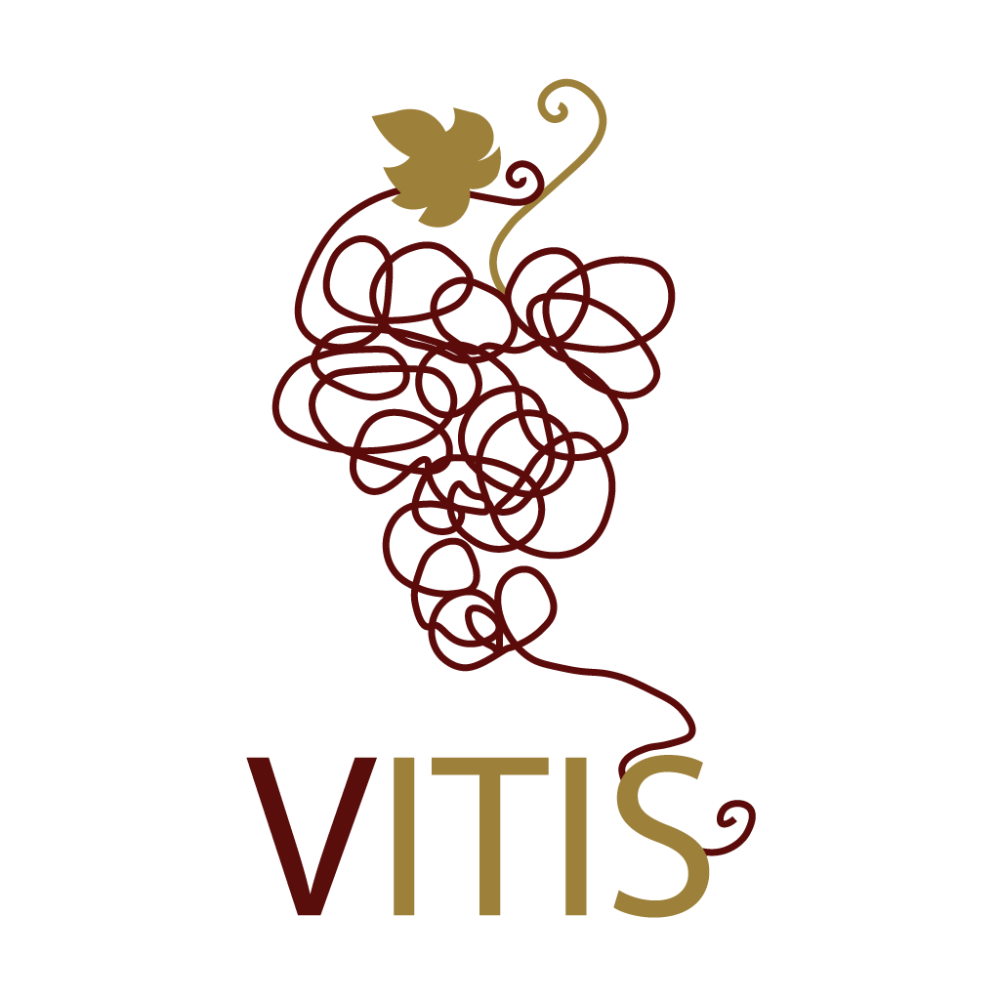

Vitis y Maison Blanche
Dos colecciones de vinos independientes bajo una misma experiencia comercial: selección clara, marcas organizadas y atención directa para elegir mejor.

Vitis
Vitis reúne una selección internacional con etiquetas de Ventisquero, Argento, Zonin y Félix Solís. Su catálogo está pensado para compradores que buscan variedad, origen y una lectura comercial rápida por estilo, cepa y ocasión.
Ver colección VitisMaison Blanche
Maison Blanche concentra etiquetas de Trapiche y El Esteco en una experiencia más enfocada, ideal para presentar vinos argentinos con una navegación limpia, filtros propios y solicitud directa desde el carrito.
Ver colección Maison Blanche